Frühstücksvielfalt
Brötchen
Aromatische Vielfalt & tägliche Frische auf dem Frühstückstisch — in liebevoller Handwerkskunst gebacken.
In unserer Bäckerei werden Brötchen in liebevoller Handwerkskunst gebacken. Hauseigene Rezepturen bringen Abwechslung in Ihre Brötchentüte. Durch eine lange Teigruhe erhalten unsere Brötchen einen einzigartigen Geschmack.
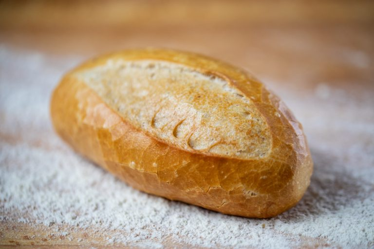
Rosenweck
Ein knuspriger Klassiker. Durch eine lange Teigruhe erhält unser Weizenbrötchen seinen einzigartigen Geschmack.
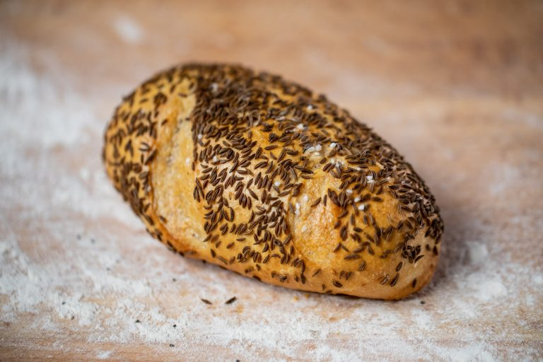
Butterlaugencroissant mit Käse
Gesalzenes Plundergebäck mit Käse überbacken! Sehr leicht, aber mega locker und lecker!
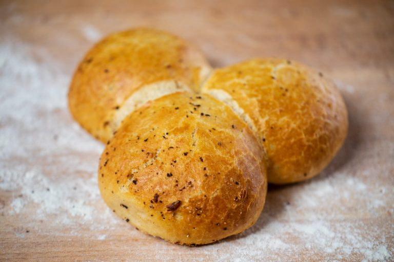
Butterlaugencroissant
Ideal als Snack für zwischendurch oder auch morgens ein Highlight auf dem Frühstückstisch.
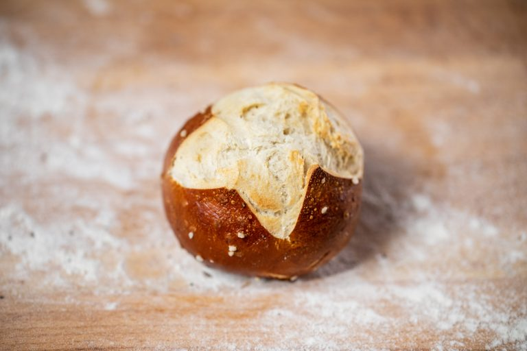
Laugenstange mit Körnern
Ganz schön lecker! Mit Butter bestrichen oder mit einer feinen Wurst- und Käseplatte.
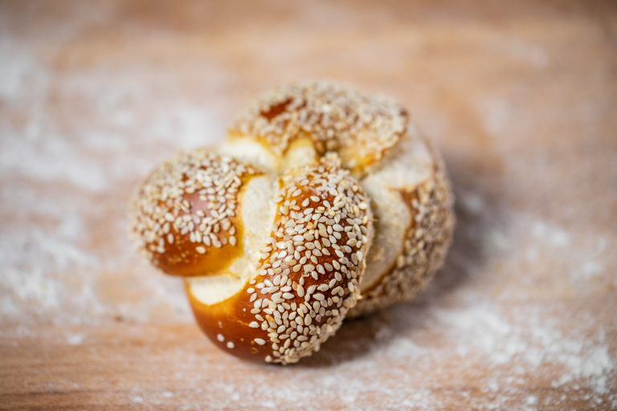
Laugenstange
Perfekt für die Zwischenmahlzeit — knusprig und aromatisch.
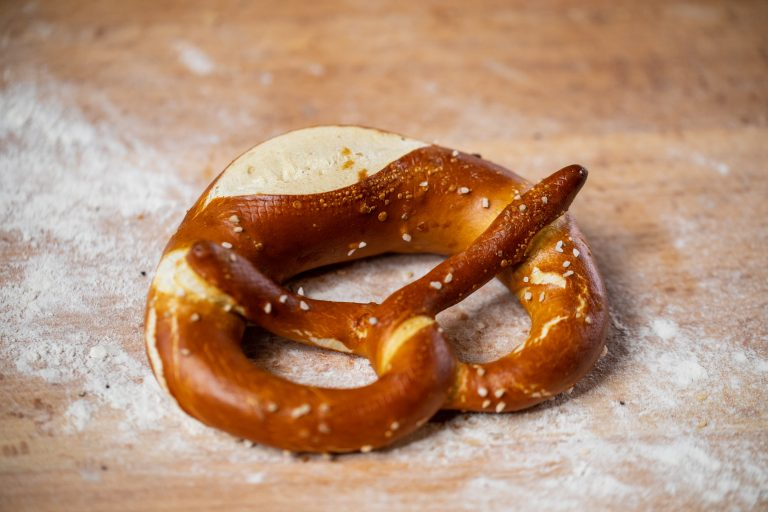
Laugenknoten mit Sesam
Unser Laugengebäckteig in Knotenform und mit Sesam bestreut!
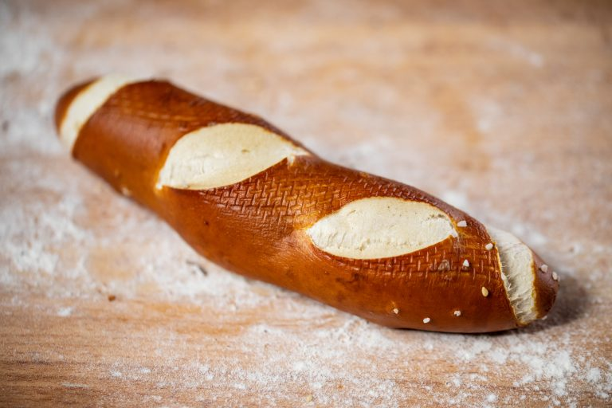
Laugenweck
Rundum locker und dabei so lecker! Unser Laugengebäckteig in der klassischen Form.
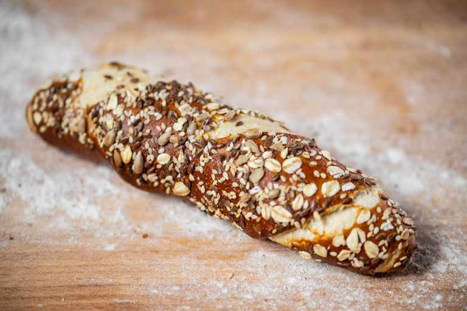
Pfeffer-Drilling
Gleich drei auf einen Schlag! Unser Weizenbrötchen 3-teilig mit feiner Pfefferkruste.
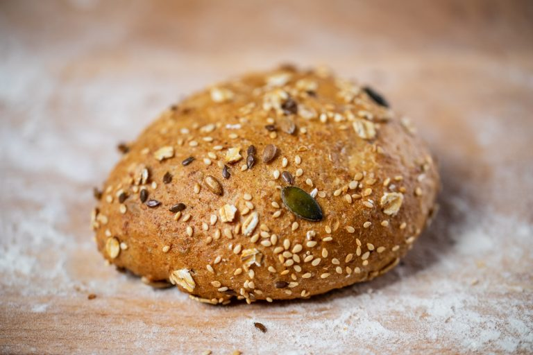
Kümmelweck
Unser Wasserbrötchenteig mit Kümmel bestreut — ein Liebling für wahre Genießer.
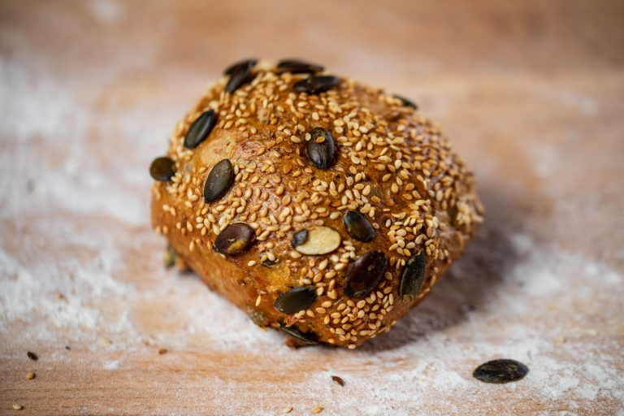
Doppelter Wasserweck
Aus einem mach zwei! Unser Wasserbrötchenteig im Doppelpack.
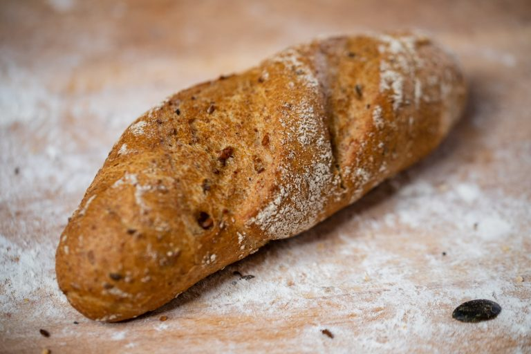
Franzosenweck
Durch die lange Teigführung entwickelt unser Franzosenbrötchen ein einzigartiges Aroma.
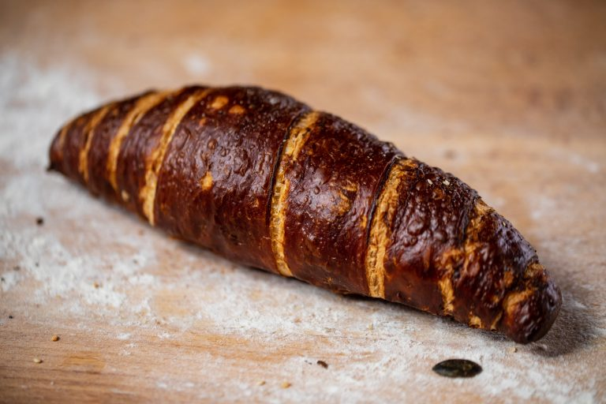
Roggenbrötchen
Der dunkle Klassiker! Einfach herzhaft und aromatisch.
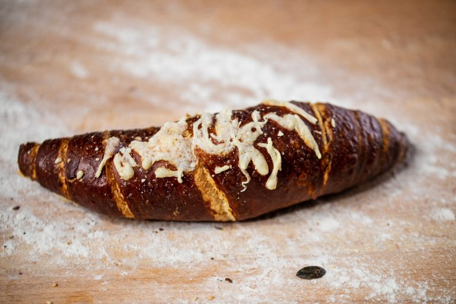
Kornspitz
Der Kornspitz ist ein großer Favorit vieler Kunden unter den Brötchen.
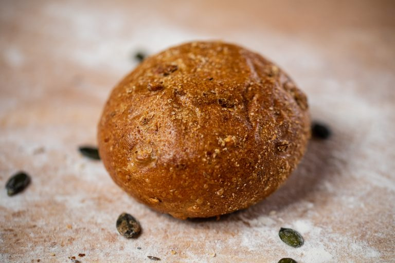
Wasserbrötchen
Aus regionalem Mehl gebacken — knusprig und frisch wie eh und je.
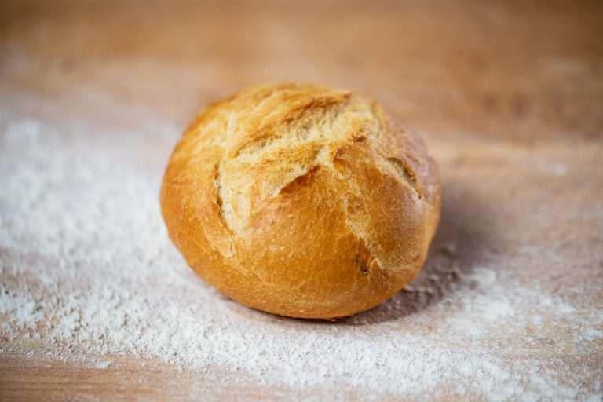
Laugenbrezel
Traditionell hergestellt und von Hand geschlungen — echte Handwerkskunst.
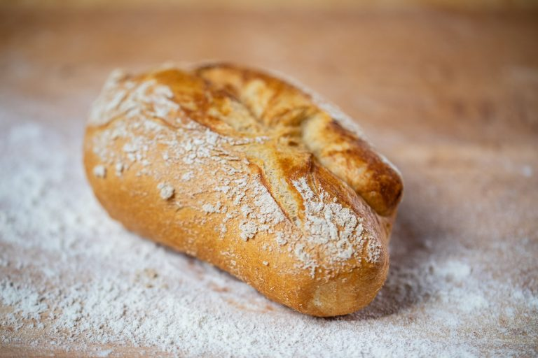
Käseweck
Mit Gouda überbacken — ein leckerer Genuss für Käseliebhaber.
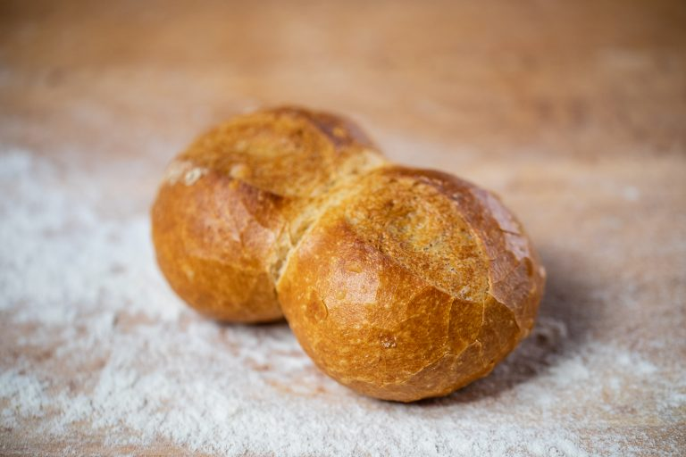
Dinkelvollkornbrötchen
Unser Dinkelweck darf bei seinen Liebhabern zum täglichen Frühstück nicht fehlen.
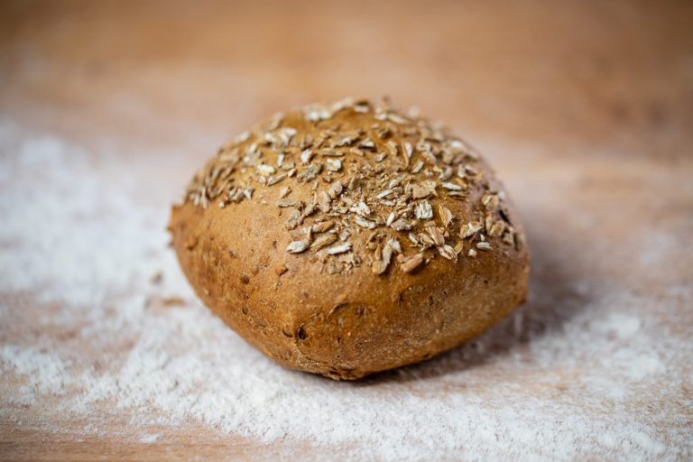
Goldkornbrötchen
Unser Vollkornbrötchen passt sehr gut zu Wurst und Käse oder auch zu süßen Aufstrichen.
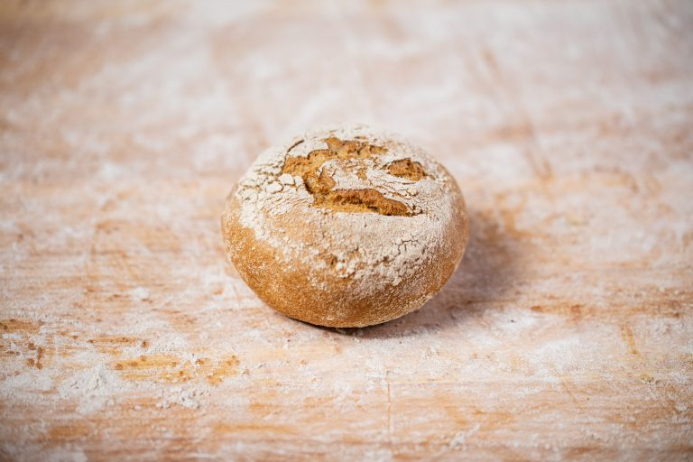
Sesambrötchen
Weizenbrötchen mit Sesam — das Pendant zum Mohnbrötchen.
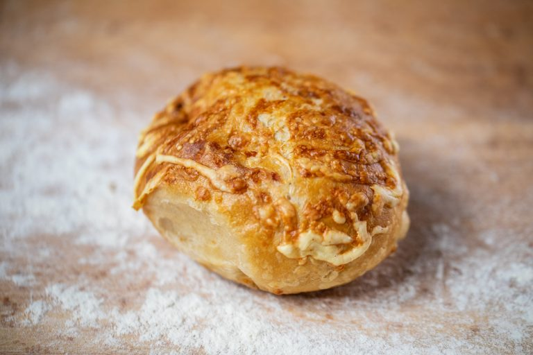
Kürbis-Traum
Ein Kundenliebling, der auf dem Frühstückstisch nicht fehlen darf — mit steirischen Kürbiskernen.
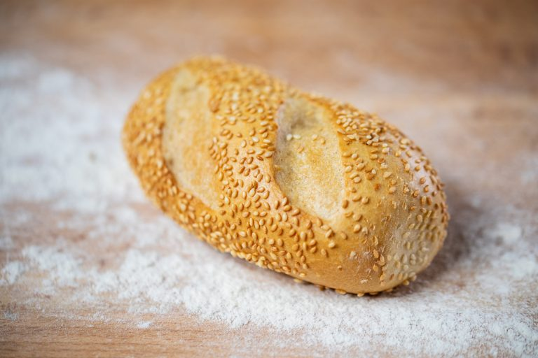
Mohnbrötchen
Anfassen, reinbeißen und genießen! Unser Wasserbrötchenteig mit Mohn bestreut.
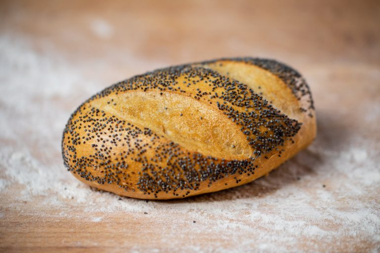
Emmerle
Ein Dinkelbrötchen mit Kürbiskernen — aus Emmer, Einkorn und Dinkel gebacken.
Besuchen Sie uns!
Unsere Brötchen backen wir täglich frisch in unseren Filialen. Kommen Sie vorbei und lassen Sie sich von der Vielfalt überzeugen!
Filialen & Öffnungszeiten